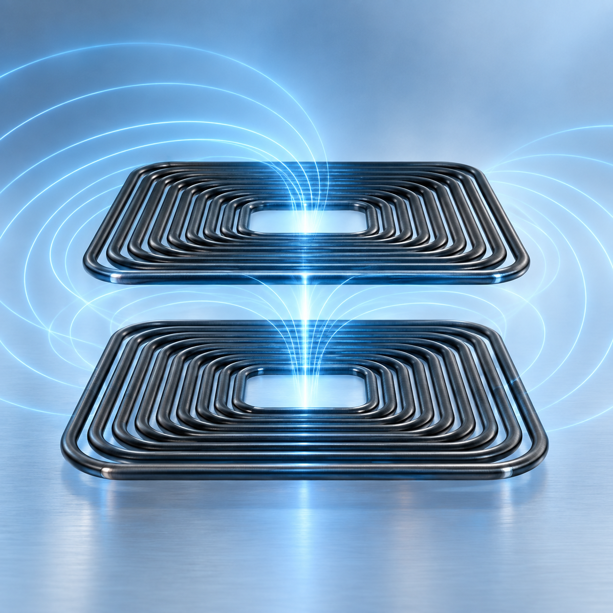
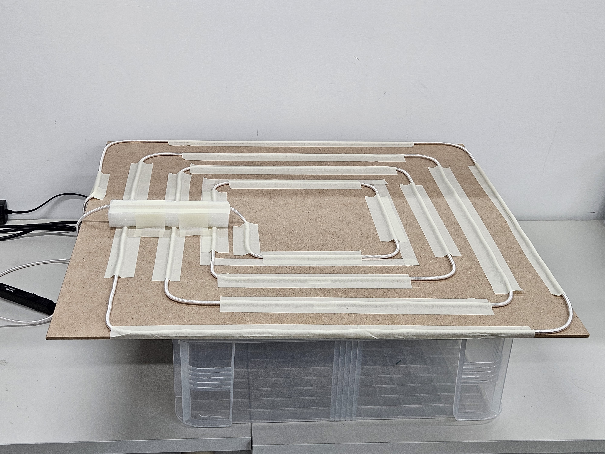

Coils and coupling
Transmitter and receiver design for the available space and transfer distance.
KAIST INTEGRATED POWER CIRCUIT LAB
APPLICATIONS
Contactless power for sensors and distributed electronics
Wireless power transfer supplies electrical energy without a physical connector. Resonant circuits and coupled coils enable contactless operation, while coil spacing, alignment and load conditions shape the achievable efficiency and stability.
Explore projects
RESEARCH OVERVIEW
Transmitter and receiver design for the available space and transfer distance.
Circuit selection and component design for efficient power transfer under weak coupling.
Analysis of component tolerances, load variation and inverter stress to support stable operation.
RESEARCH IN PROGRESS
Project snapshot · June 2026
PROJECT 01
Research partner
The project develops wireless power for factory-monitoring sensors, including camera modules. A large transmitter and a compact receiver create a very weakly coupled link, requiring coordinated coil, compensation-circuit and inverter design.
Design transmitter and receiver coils, compensation circuits and PCBs, then integrate the camera module and enclosure.
Evaluate separate prototype configurations at 30 cm and 50 cm transfer distances, with different coils and compensation networks.
Study the efficiency–robustness trade-off and the effects of compensation tolerances on output power and inverter stress.
